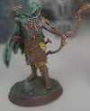
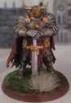
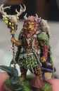
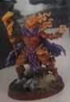

Choisis ton aventurier.
Ta fiche pour jouer, et les souvenirs de votre aventure à portée de main.

ELFE • RÔDEURVax’Ildan
Combat, magie, ressources et équipement.

MINOTAURE • PALADINHammerz
Combat, magie, soins et ressources.

LÉONIN • DRUIDELelio
Combat, magie préparée et ressources.

GÉNASI DE FEU • ENSORCELEURLoris
Combat, sorts et Sorcellerie innée.
Boutique, équipement et services disponibles à l’auberge.
📖 Journal de campagneRetrouver les sessions passées et les souvenirs importants.
♙ RencontresLes personnages et créatures croisés au cours de l’aventure.
🗺 Cartes & lieuxLes lieux connus et les cartes accessibles au groupe.
🏆 ExploitsMoments héroïques, coups de génie et catastrophes mémorables.